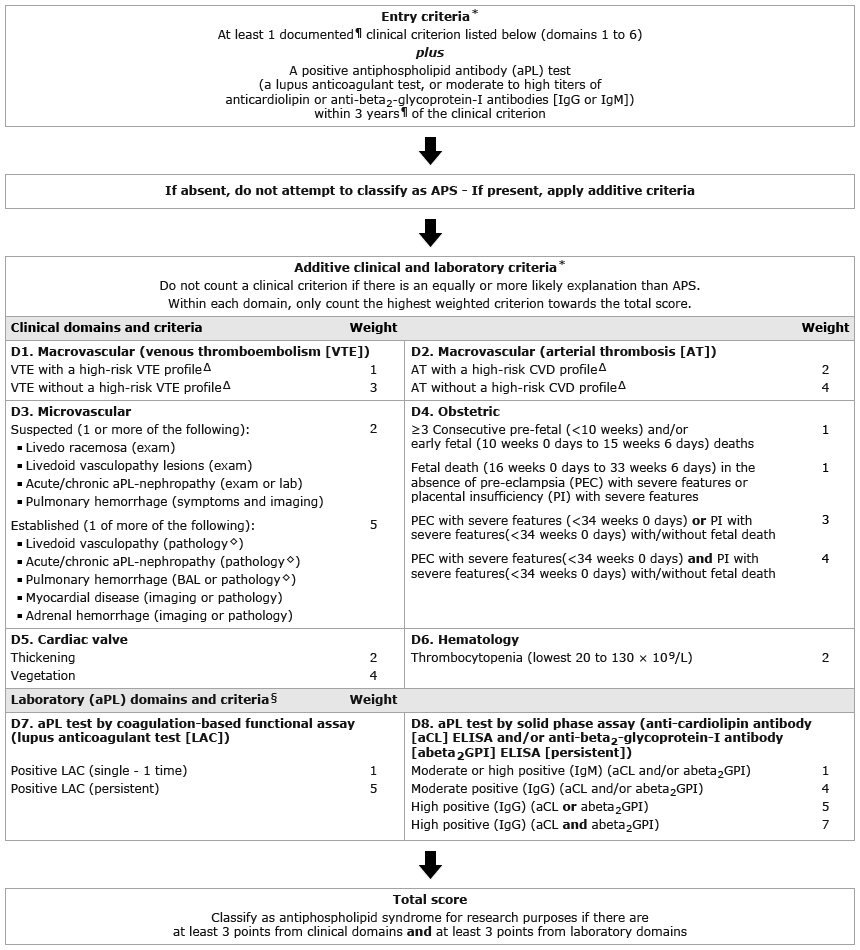

BAL: bronchoalveolar lavage; CVD: cardiovascular disease; D1 to D8: domains 1 to 8; exam: physical examination; lab: laboratory tests.
* Refer to UpToDate table on definitions of the 2023 ACR/EULAR APS classification criteria for the definitions of clinical and laboratory criteria including the moderate and high titer anticardiolipin antibody (aCL) IgG/IgM or anti-beta2-glycoprotein-I antibody (abeta2GPI) IgG/IgM positivity.
¶ Antiphospholipid antibody (aPL) positivity must be confirmed within +/– 3 years of the documented (by medical records) clinical criterion.
Δ Refer to UpToDate table on definitions of high-risk VTE and CVD profiles for the definitions of high-risk profiles.
◊ Suspected microvascular definition for each corresponding item should be first fulfilled.
§ For the purpose of laboratory domain scoring: 1) "persistent" aPL test results (at least 12 weeks apart) should be scored based on 2 consecutive positive lupus anticoagulant (LAC), 2 consecutive highest aCL, and/or 2 consecutive highest abeta2GPI results (2 consecutive results with 1 moderate positive and 1 high positive aCL/abeta2GPI should be marked as "moderate positive" if there are no additional consecutive high results available); 2) for prospective data collection, 2 consecutive positive aPL results are required within 3 years of the clinical criterion; 3) for retrospective data collection, 2 consecutive positive aPL results and at least 1 positive aPL result within 3 years of the clinical criterion are required; 4) if there are multiple LAC assays performed on patients receiving anticoagulants (vitamin K antagonists, heparin, direct oral anticoagulants, indirect Factor Xa inhibitor), the results of the tests performed without anticoagulants should be included in the assessment unless the results of the tests performed with anticoagulants are reviewed/confirmed by an individual who has expertise in performing/interpreting the LAC assay (refer to UpToDate table on definitions of the 2023 ACR/EULAR APS classification criteria for the definitions of clinical and laboratory criteria for details); 5) moderate (40 to 79 units) and high (≥80 units) level aCL/abeta2GPI are based on enzyme-linked immunosorbent assays (ELISAs) (refer to UpToDate table on definitions of the 2023 ACR/EULAR APS classification criteria for the definitions of clinical and laboratory criteria for details); and 6) for prospective studies, the most recent aPL test (LAC and/or moderate-high level aCL/abeta2GPI) should be positive to maintain homogeneity of research cohorts.